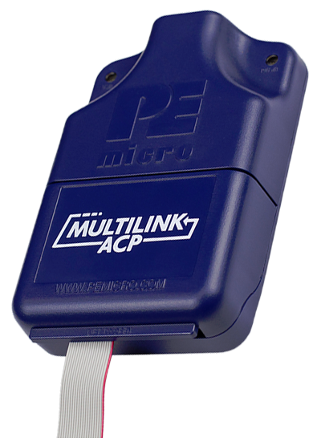

Microcontroller boot, symbols and debug interfaces
Pressing reset starts the chip’s boot chain. Being able to pause that chain and observe a running build changes what a firmware fault looks like.
From reset to user code
A processor starts at a hardware-defined address or a ROM stage. It may check a boot pin or image, initialise external flash, then hand over to application startup code. Startup generally sets up needed memory and runtime state before calling main. A watchdog, supply dip or fault handler may restart the program before you see its first status message.

Photo by Phiarc, scaled for the course, with labels added. Original photo · CC BY-SA 4.0.


Photo by KMcNeilWiki, scaled for the course. Original photo · CC BY-SA 4.0.

Use different tools for different observations
Serial UART logs record events the firmware actively emits. USB enumeration checks the USB path and software state of the image that implements it. Arm SWD generally carries a data signal and clock to a debug port. It can let an appropriate probe halt execution and inspect memory or core registers. Debug facilities can be locked for production, use a different chip configuration, or be unavailable when the target lacks power.
Watch on YouTube · Follow the moment when the debugger stops at a line and displays the variable values. The video uses an earlier Picoprobe setup. Use the written vendor instructions for the current probe wiring. Intro to Raspberry Pi Pico and RP2040 - C/C++ Part 2: Debug with Picoprobe | Digi-Key Electronics · DigiKey.
Link the debug information to the firmware actually running. ELF files can include addresses, symbols and source-line mappings. A raw binary or UF2 image used for programming serves a different purpose. Rebuilding or using a release build with optimisation can move symbols or omit the variables you want to inspect.
Interpret effects the debugger introduces
Halting changes timing with peripheral, watchdog and interface effects that depend on the device. A bug that happens only on normal power-up can disappear during a single-step session. After locating it, verify startup again with the probe detached and record one repeatable fault and recovery. Raspberry Pi debug probe reference.